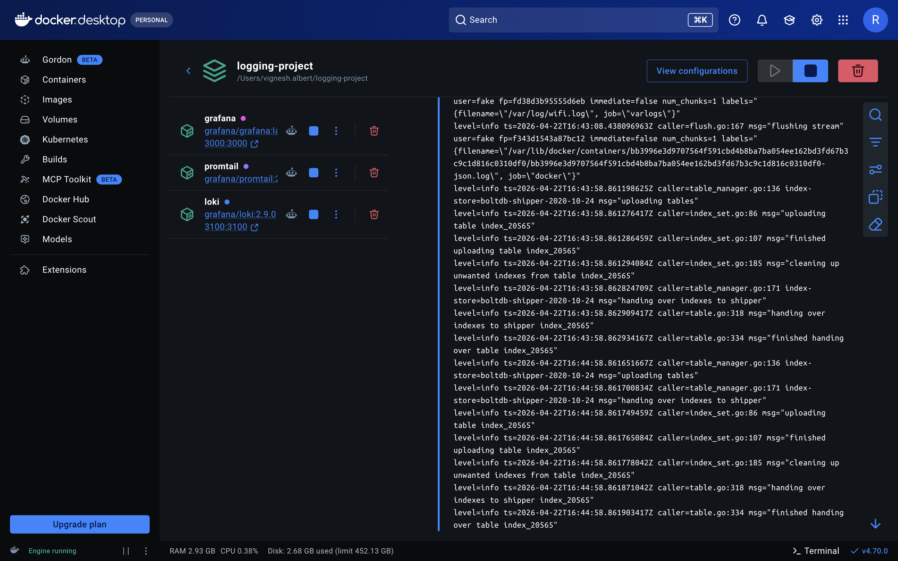
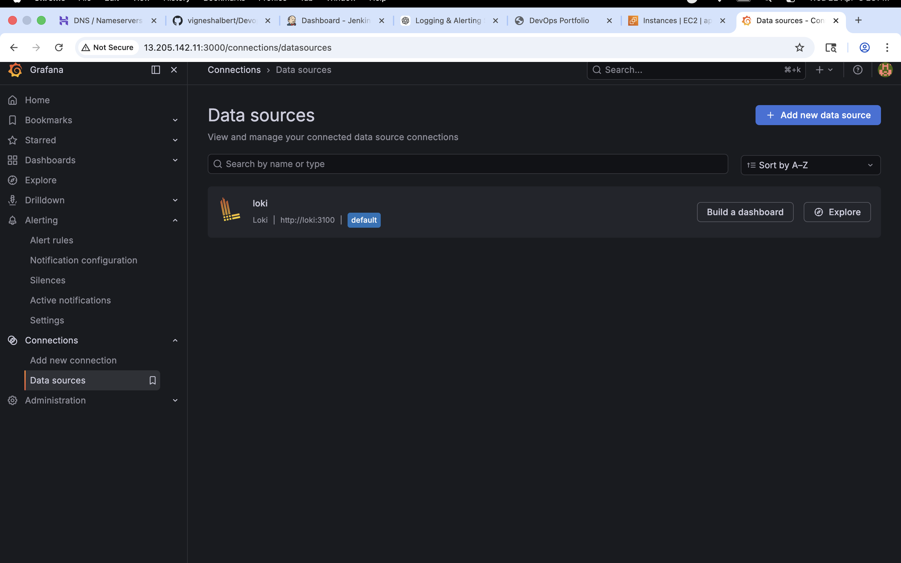

📌 Project Overview
This project demonstrates a centralized logging and alerting system using Grafana Loki stack. Logs are collected from Docker containers and NGINX applications using Promtail, stored in Loki, and visualized in Grafana dashboards for real-time monitoring and troubleshooting.
⚙️ Tech Stack
AWS EC2 Docker Grafana Loki Promtail NGINX🏗️ Architecture Flow
Application (Docker / NGINX)
↓
Promtail (Log Collector)
↓
Loki (Log Storage)
↓
Grafana (Visualization)
↓
Dashboards + Alerts
🚀 Features
- Centralized log aggregation from containers
- Real-time log streaming using Promtail
- Log querying using Loki (LogQL)
- Grafana dashboards for visualization
- Error monitoring (HTTP 404 / 500)
- Traffic analysis using logs
📸 Screenshots
Docker Containers

Grafana Logs

Logs Monitoring
 h3>Error Monitoring
h3>Error Monitoring

Traffic Dashboard

🧠 Key Learnings
- Observability and logging architecture
- Grafana Loki and LogQL usage
- Promtail log collection setup
- Real-time monitoring and debugging
- AWS EC2 deployment of monitoring stack